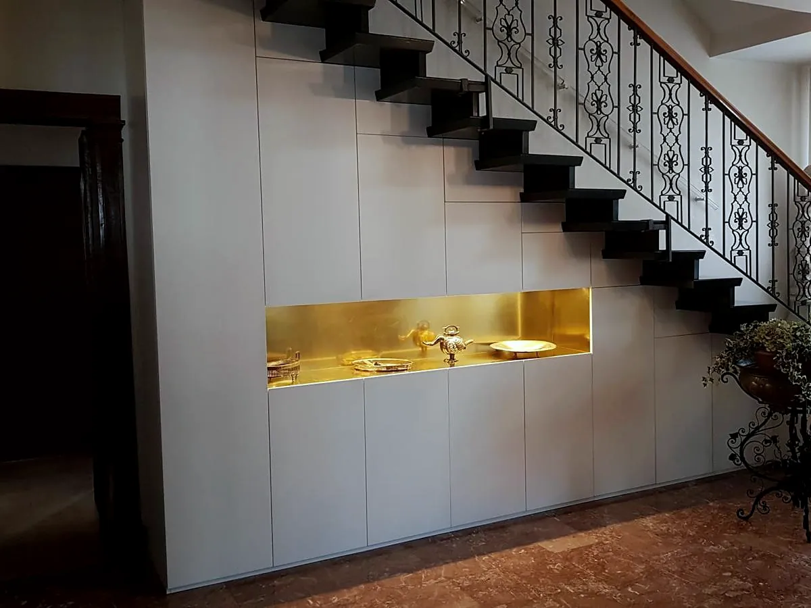
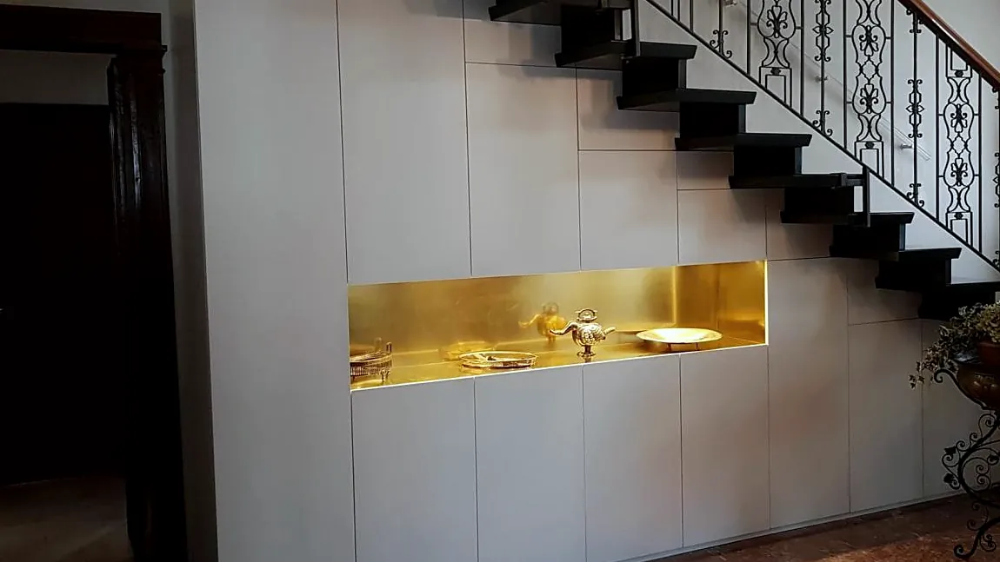
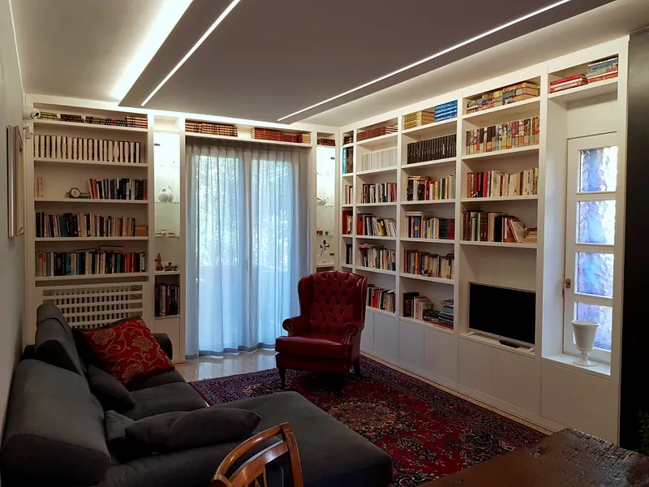
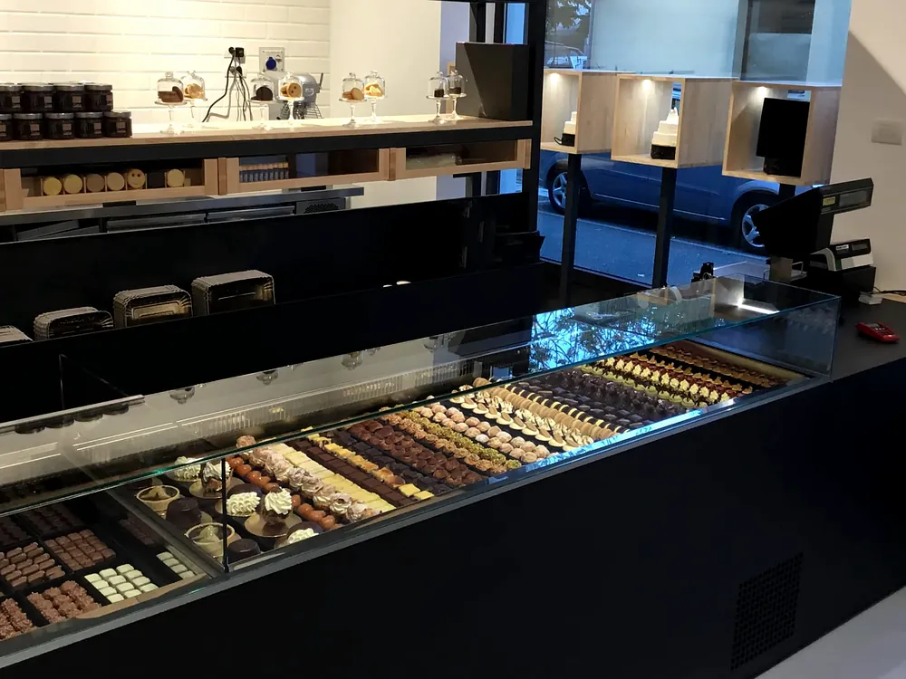
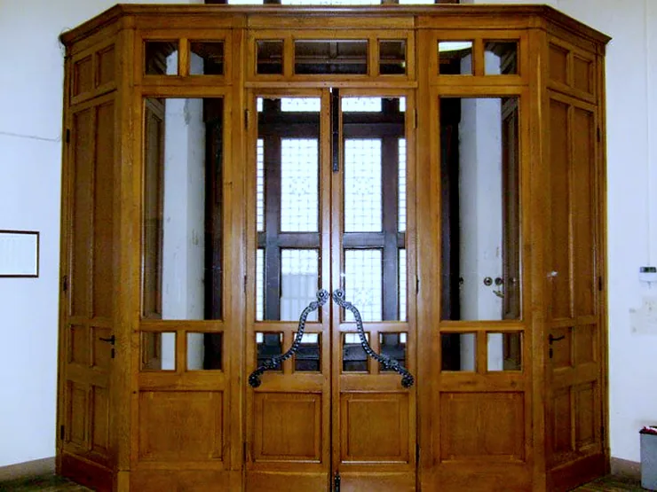
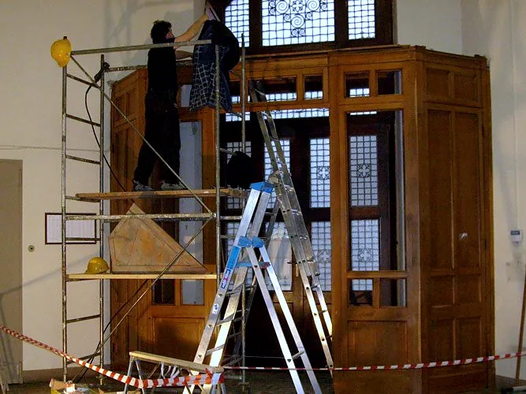
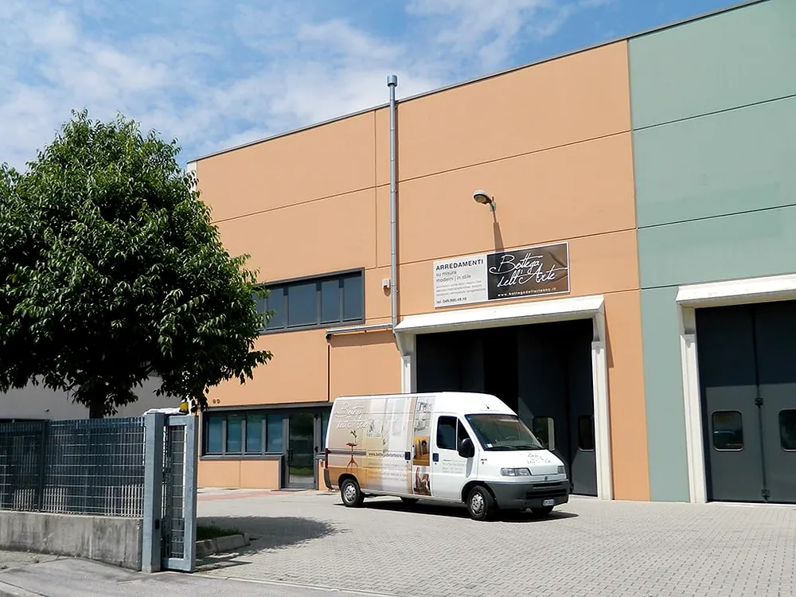
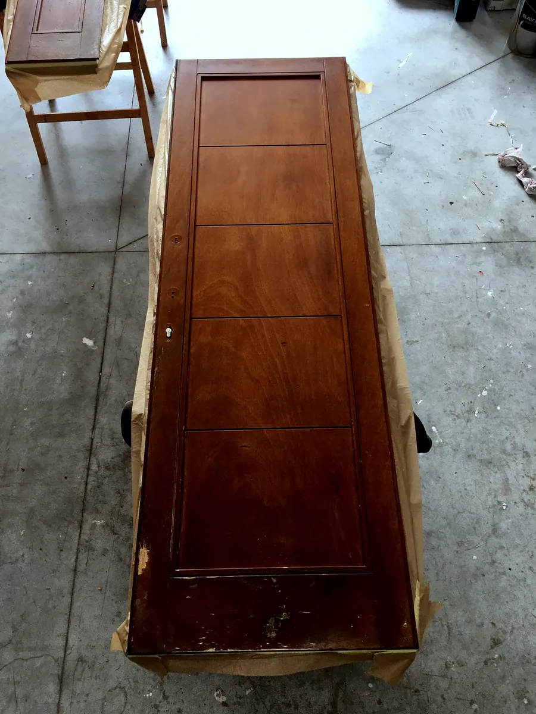
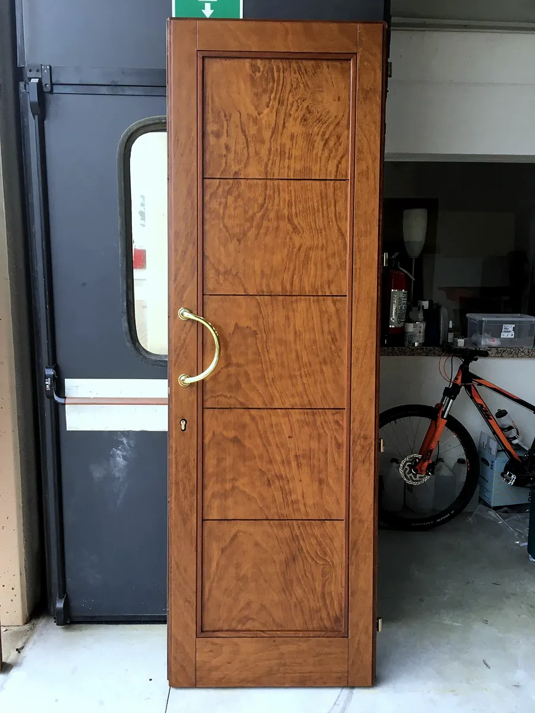

Due soci e un laboratorio a Mestrino: cucine, armadi, sottoscala, serramenti e restauri, dal disegno dell'architetto allo schizzo su un foglio.



01
Otto ante con apertura a push e una nicchia in ottone.
02
Su misura del muro, fino al soffitto.
03
Ferro nero e frassino naturale per una pasticceria a Bolzano.





PrimaDopo